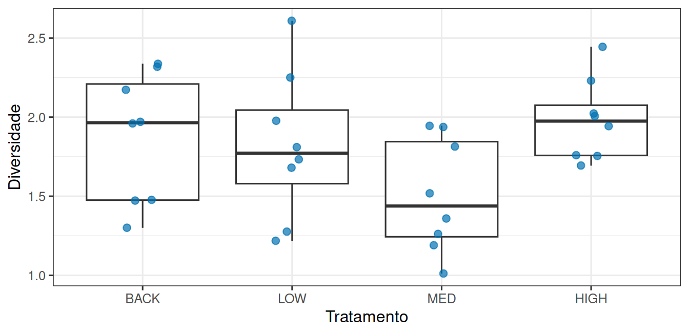

library(tidyverse)
theme_set(theme_bw(base_size = 12))Um fator, quatro níveis
Prática em R 07
1 Objetivo desta prática
A leitura desta semana mostrou dois experimentos com as mesmas médias e conclusões opostas, e explicou que a razão F compara duas fontes de variação.
Hoje você vai operar essas duas fontes. Em vez de receber os dados prontos, você define os parâmetros que os geram, quatro médias e um desvio-padrão. Girando esses botões, descobre o que faz F subir e o que faz F descer, e só então aplica o procedimento a dados reais de contaminação por zinco.
O objetivo em R é escrever um modelo como processo gerador, ajustar aov() e ler as comparações par a par.
2 Preparação
Crie um script pr-anova.R com o cabeçalho de identificação e comece por:
3 Um experimento sem efeito nenhum
Vamos construir um experimento com quatro tratamentos e oito canais em cada um, medindo a diversidade de algas. Os parâmetros ficam explícitos no início, para serem fáceis de mudar:
medias_verdadeiras <- c(1.8, 1.8, 1.8, 1.8) # uma por tratamento
desvio_dentro <- 0.5 # variação entre canais do mesmo tratamento
n_por_grupo <- 8
experimento <- tibble(
tratamento = factor(rep(c("BACK", "LOW", "MED", "HIGH"), each = n_por_grupo),
levels = c("BACK", "LOW", "MED", "HIGH")),
diversidade = rnorm(4 * n_por_grupo,
mean = rep(medias_verdadeiras, each = n_por_grupo),
sd = desvio_dentro)
)
glimpse(experimento)Rows: 32
Columns: 2
$ tratamento <fct> BACK, BACK, BACK, BACK, BACK, BACK, BACK, BACK, LOW, LOW, …
$ diversidade <dbl> 1.476582, 2.173651, 1.970093, 2.337738, 1.300071, 1.472176…Repare no que acabamos de escrever, porque as quatro médias verdadeiras são iguais. Neste experimento o tratamento não faz absolutamente nada, e sabemos disso porque fomos nós que o construímos.
ggplot(experimento, aes(x = tratamento, y = diversidade)) +
geom_boxplot(outlier.shape = NA) +
geom_jitter(width = 0.12, size = 2.2, alpha = 0.7, colour = "#0072B2") +
labs(x = "Tratamento", y = "Diversidade")
Ainda assim as quatro caixas da Figura 1 não ficam alinhadas, porque são 32 canais sorteados. A pergunta da ANOVA é se essa separação é grande em comparação com o espalhamento dentro dos grupos.
A fórmula diversidade ~ tratamento lê-se “diversidade em função de tratamento”, a mesma notação da Prática 06:
modelo_nulo <- aov(diversidade ~ tratamento, data = experimento)
summary(modelo_nulo) Df Sum Sq Mean Sq F value Pr(>F)
tratamento 3 1.012 0.3373 2.333 0.0956 .
Residuals 28 4.049 0.1446
---
Signif. codes: 0 '***' 0.001 '**' 0.01 '*' 0.05 '.' 0.1 ' ' 1A tabela traz os graus de liberdade (Df), a soma de quadrados (Sum Sq), o quadrado médio (Mean Sq), a razão F e o valor de p. A linha tratamento é a variação entre grupos, e Residuals é a variação dentro dos grupos.
4 Sua vez, parte 1: mova o F
Troque o vetor medias_verdadeiras pelos seus valores, gere de novo o experimento e ajuste o modelo.
5 Os dados reais: quatro concentrações de zinco
Um estudo mediu a diversidade de algas em canais sob quatro concentrações de zinco, que são BACK (concentração de fundo, o controle), LOW, MED e HIGH.
url <- "https://raw.githubusercontent.com/FCopf/datasets/refs/heads/main/medley.csv"
algas <- read_csv(url, show_col_types = FALSE) |>
mutate(ZINC = fct_relevel(ZINC, "BACK", "LOW", "MED", "HIGH"))
algas |> count(ZINC)# A tibble: 4 × 2
ZINC n
<fct> <int>
1 BACK 8
2 LOW 8
3 MED 9
4 HIGH 9fct_relevel() coloca os níveis na ordem que interessa, do menor para o maior zinco. Isso vale tanto para as tabelas quanto para o eixo dos gráficos.
modelo <- aov(DIVERSITY ~ ZINC, data = algas)
summary(modelo) Df Sum Sq Mean Sq F value Pr(>F)
ZINC 3 2.567 0.8555 3.939 0.0176 *
Residuals 30 6.516 0.2172
---
Signif. codes: 0 '***' 0.001 '**' 0.01 '*' 0.05 '.' 0.1 ' ' 1O valor de p responde a uma pergunta, “as quatro médias são todas iguais?”. Ele não diz quais concentrações diferem entre si. Para isso existe o teste de Tukey, que compara todos os pares ajustando para o número de comparações:
TukeyHSD(modelo) Tukey multiple comparisons of means
95% family-wise confidence level
Fit: aov(formula = DIVERSITY ~ ZINC, data = algas)
$ZINC
diff lwr upr p adj
LOW-BACK 0.23500000 -0.3986367 0.86863665 0.7457444
MED-BACK -0.07972222 -0.6955064 0.53606192 0.9847376
HIGH-BACK -0.51972222 -1.1355064 0.09606192 0.1218677
MED-LOW -0.31472222 -0.9305064 0.30106192 0.5153456
HIGH-LOW -0.75472222 -1.3705064 -0.13893808 0.0116543
HIGH-MED -0.44000000 -1.0373984 0.15739837 0.2095597Cada linha é um par. diff é a diferença entre as médias, lwr e upr delimitam o intervalo de confiança dessa diferença, e p adj é o valor de p ajustado. Um par cujo intervalo contém o zero não mostra diferença detectável.
6 Sua vez, parte 2: de onde vem o F?
O F da tabela completa resume as quatro concentrações em um número só. Vamos descobrir quais grupos o sustentam.
algas_reduzido <- algas |>
filter(ZINC != "____") |>
mutate(ZINC = fct_drop(ZINC))
summary(aov(DIVERSITY ~ ZINC, data = algas_reduzido))fct_drop() elimina o nível que ficou sem observações depois do filter(). Sem ele, o R continuaria esperando quatro grupos.
Compare a nova tabela com a completa, olhando graus de liberdade, F e valor de p.
7 Entrega
Salve o script pr-anova.R com o cabeçalho preenchido. Antes de enviar, reinicie o R (Session → Restart R) e execute o script inteiro uma vez. As respostas escritas vão no próprio script, como comentários iniciados por #.